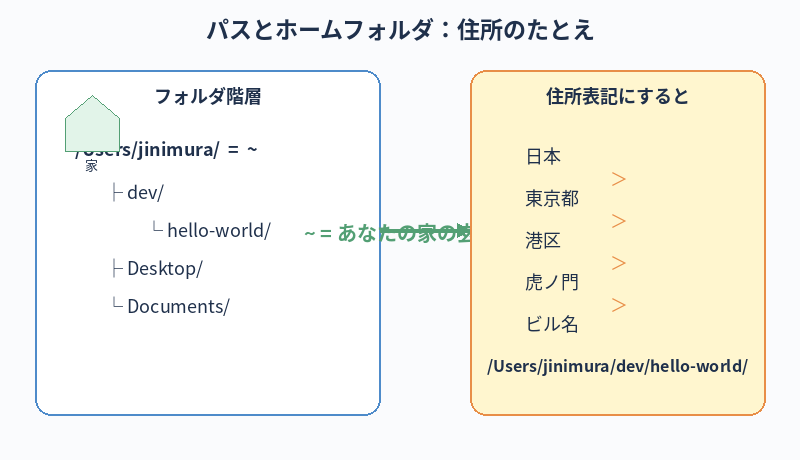

ターミナルが何のための道具かが分かる。
実際にターミナルを開いて、最低限のコマンドを打てるようになる（フォルダの中身を見る・移動する・新しいフォルダを作る）。
ターミナルとは何か（Mac の基本）
この章のゴール
ターミナルって何？
ターミナルは、ものすごく雑に言うと 「文字で Mac を操作するための窓」です。
普段 Mac を触る時は、Finder（ファインダー）でフォルダを開いたり、マウスでアプリをダブルクリックして起動したり、画面上のボタンを押したりしますね。 これと同じことを、マウスを使わず、文字を打って Mac にやらせるのがターミナルです。
なぜターミナルを使うの？
「Finder でできることをわざわざ文字で？」と思うかもしれません。 でも、ターミナルには次のような利点があります：
- マウスではできない細かい操作ができる
- 同じ作業を一気にたくさん実行できる（自動化に強い）
- AI（Claude Code）がターミナルから動くので、AI に作業を頼むには必須
- 世界中のエンジニアが共通で使っている標準ツール
本書のいちばんの理由は3番目。Claude Code はターミナルで動くので、ターミナルを開けないと AI との協働が始まりません。
最初は怖いかもしれませんが、本書で扱うコマンドは 10個もありません。少しずつ慣れていきましょう。
初めてターミナルを開いてみる
-
Spotlight（スポットライト）検索を開く
キーボードでcommand（⌘）キーを押しながらスペースキーを押します。 画面の真ん中に検索窓が出てきます。 -
「ターミナル」と入力
検索窓に「ターミナル」と打つと、候補に「ターミナル.app」が出てきます。 -
Enter キーを押す
ターミナルアプリが起動し、白いウィンドウ（または黒）が出てきます。
最初の画面の見方
ターミナルを開くと、何やら白い画面に文字が出ています。多くの場合、こんな感じです：
jinimura@MacBook-Pro ~ %
意味はこうです：
jinimura- あなたのユーザー名（Mac のログイン名）
@MacBook-Pro- 使っている Mac の名前
~（チルダ）- 「あなたのホームフォルダ」を指す記号。今あなたがいる場所のこと
%- 「ここにコマンドを打ってね」という合図。プロンプトと呼ばれる
あなたの値を貼り付けておくと、以降の章のコマンド例が自動で書き換わります（任意）
ターミナルに表示されている ユーザー名@Mac名 の部分をコピーして、下の欄に貼り付けてください。
開発フォルダのルートも変えたい人は、2つめの欄で指定できます。
入力すると、第6章以降のコマンド例（cd ~/... など）の該当箇所が、あなたの環境に合った形に自動で書き換わります。
いまだけ要点（詳しくは第7章）
-
デスクトップ（
~/Desktop/）や書類（~/Documents/）は避ける。 iCloud と同期されている場合があり、開発ファイルが大量に同期キューに入って Mac が重くなる原因になります。 -
ホーム直下に開発フォルダを作るのが安全。
本書推奨の
~/dev/や、macOS 公式の~/Developer/（金槌アイコンの特別フォルダ）はホーム直下なので iCloud に同期されません。 -
フォルダ名は英数字＋ハイフン推奨。
日本語名は GitHub・Firebase・各種ツールで URL エンコードされたり、対応していなかったりして、原因不明の不具合の温床になります。
例：
poolside-website◯ ／マイサイト✕
入力すると自動保存されます
入力した内容はあなたのブラウザにのみ保存されます（localStorage）。サーバーには送られません。 別の Mac やブラウザで開くと、再度入力が必要です。
入力したら、以降のコマンド例にあなたの値が反映されます。試しに次の節を読み進めてみてください。
本書ではコマンドを示す時、見やすさのために
$ や % といったプロンプト記号を 省略することがあります。
入力するのは その記号より右側だけで OK です。
絶対に覚える：ターミナル基礎用語
ここから先、何度も出てくる単語です。意味とイメージを今のうちに頭に入れておくと、後の章がぐっと楽になります。
Terminalターミナル
- 一言で
- 文字で Mac を操作する 窓 のこと
- たとえると
- Finder（マウス操作）を、文字で行うバージョン。Mac との対話用テキストチャット画面みたいなもの
- 関連
- シェル / プロンプト / コマンド
Shellシェル
- 一言で
- ターミナルの中で、あなたの言葉（コマンド）を Mac の言葉に翻訳して動かしてくれる通訳
- たとえると
- ターミナルが「窓口の建物」、シェルが「窓口の中の通訳係」。Mac の最新版では
zshという名前のシェルが標準 - 関連
- zsh / bash / .zshrc
Promptプロンプト
- 一言で
- 「ここに打ち込んでね」のサイン。
%や$の記号 - たとえると
- 飲食店の「ご注文をどうぞ」の声。これが出ている時だけコマンドを受け付ける
- 関連
- カーソル
Commandコマンド
- 一言で
- Mac にやってほしいことを書いた1行の指示（例：
ls） - たとえると
- 注文票。Enter キーが「これで注文確定」の合図
- 関連
- 引数 / オプション（
-pなど）
Directory / Folderディレクトリ／フォルダ
- 一言で
- 同じもの。Finder では「フォルダ」、ターミナルでは「ディレクトリ」と呼ばれる
- たとえると
- ファイルをまとめて入れておく書類入れ。本書では「フォルダ」に統一
- 関連
- パス / ホーム / cd / ls
Pathパス
- 一言で
- そのフォルダ／ファイルが Mac の中のどこにあるかを表す住所
- たとえると
- 「日本＞東京都＞港区＞虎ノ門＞◯◯ビル」のような住所表記。
/で区切る - 関連
- 絶対パス（
/Users/...）／相対パス（./）
Homeホームフォルダ／
~- 一言で
- あなた専用の作業場の玄関。
/Users/あなたのユーザー名/のこと - たとえると
- 自分の家。
~（チルダ）と書くと「自分の家から数えて」の意味になる（例：~/dev= 自分の家の中の dev フォルダ） - 関連
- cd ~ で帰宅

最低限の3つのコマンド
① 今いるフォルダの中身を見る：ls
「list」の略。今いるフォルダに何が入っているかを表示します。
ls
Enter キーを押すと、Documents、Desktop、Downloads などの名前が並びます。 これは Finder で「ホームフォルダ」を開いたときと同じものです。
② 別のフォルダに移動する：cd
「change directory（フォルダを変える）」の略。
cd Desktop
これで「デスクトップに移動」したことになります。プロンプトの表示が変わって、今いる場所がわかります：
jinimura@MacBook-Pro Desktop %
元のホームフォルダに戻りたい時は：
cd ~
一つ上のフォルダ（親フォルダ）に戻りたい時は：
cd ..
③ 新しいフォルダを作る：mkdir
「make directory」の略。
mkdir my-first-folder
今いる場所に my-first-folder という名前の空のフォルダができます。Finder で確認すると、ちゃんと出来ていることが分かります。
ためしに3コマンド連続でやってみる
順番にコピペして Enter してみてください。
cd ~/Desktop mkdir test-folder ls
結果として、デスクトップに test-folder という空フォルダができ、ls でその名前が表示されるはずです。
出来上がったテストフォルダは、Finder からゴミ箱にドラッグして削除して構いません。
おい、いまターミナルのフォーカスを当てるためにトラックパッドに手が伸びてないか？ Poolside にトラックパッドユーザーは存在しない。即トラックボールに切り替えろ。 手首が痛くなくなるし、肩こりも減るし、何よりカッコいい。会社に置いてあるから空いてるやつを使え。
ターミナルは「ブラウザの入力欄」と何が違うか
Mac で文字を打つ場面といえば、メモアプリやブラウザのテキストボックスが普通ですよね。 ターミナルは見た目こそ似ていますが、挙動がかなり違います。 最初にこのギャップを知っておくだけで、混乱がぐっと減ります。
| 普段（ブラウザ・メモ）の感覚 | ターミナルでは… |
|---|---|
command + Z で戻す |
使えません。 入力途中の取り消しは別キー（後述）。 Enter を押して実行されたコマンドは取り消せないのが原則です。実行前に内容を見直す癖を。 |
| マウスでカーソルをクリックして移動 |
基本的にクリックでカーソルが動かないターミナルが多いです。 カーソル移動は矢印キーや control / option との組み合わせで行います。 |
マウス選択 → delete で範囲削除 |
範囲選択削除は使いません。 単語単位 ( control + W) や行頭まで (control + U) など、専用キーで削除します。
|
| ↑↓キーで画面スクロール |
↑↓キーは「過去に打ったコマンドを呼び戻す」キーです。 画面のスクロールはマウスホイール／トラックボールホイールで。 |
パスワード欄は ●●● 表示 |
パスワード入力時は何も表示されません（カーソルすら動かないように見える）。 実際にはちゃんと打てているので、迷わず入力して Enter。 |
ペーストは command + V |
同じ command + V でOK。これは Mac のターミナルでも使えます。 |
一番大事なのは 「Enter を押した後は戻せない」ということ。
意味の分からないコマンドを Enter してしまうと、システムを壊す操作だった場合でも取り消せません。
だから本書ではしつこく「意味を理解してから実行」と書いているわけです。
知っておくと楽なショートカット
全部覚える必要はありません。太字のものから順に体に入れていくのがおすすめです。 どれもキーボードを見ずに打てるようになるのが目標。
入力補助・履歴
| キー操作 | 効果 |
|---|---|
Tab | 入力途中のフォルダ名・コマンド名を自動補完。最強のショートカット。打ち間違いも減る |
↑（上矢印） | 1つ前に打ったコマンドを呼び戻す。連打で過去にさかのぼる |
↓（下矢印） | 呼び戻したコマンドを進める（↑で行きすぎた時に戻る） |
control + R | 過去のコマンドをキーワードで検索。例：control + R → git と打つと、過去の git 系コマンドが出てくる |
カーソル移動
| キー操作 | 効果 |
|---|---|
control + A | 行の先頭にカーソルを移動 |
control + E | 行の末尾にカーソルを移動 |
option + ← | 1単語ぶん左にジャンプ |
option + → | 1単語ぶん右にジャンプ |
削除（重要）
| キー操作 | 効果 |
|---|---|
delete（バックスペース） | カーソルの左 1 文字を削除（ブラウザと同じ） |
control + W | カーソルの左の1 単語をまとめて削除（ブラウザの option + delete 相当） |
control + U | カーソル位置から行頭まで全削除（打ち間違えた時の最速リセット） |
control + K | カーソル位置から行末まで削除 |
打ち間違えた行を全部消したい時、delete を連打しないでください。
control + U 一発で行が消えます。これを覚えるとイライラが激減します。
実行・脱出
| キー操作 | 効果 |
|---|---|
Enter | コマンドを実行（戻せないので、押す前に必ず内容確認） |
control + C | 動いているコマンドを強制終了。固まった時の脱出キー。何度押してもOK |
control + D | ターミナルを終了する（または入力の終わりを伝える） |
control + L | 画面の表示をクリア（履歴は消えない） |
command + K | 画面の表示をクリア（Mac のターミナル.app の機能） |
コピー・ペースト
| キー操作 | 効果 |
|---|---|
command + C | 選択範囲をコピー（ターミナルでも使える） |
command + V | ペースト。本書のコマンド例はこれで全部貼れる |
上の表で太字になっているもの（Tab / ↑ / control+A / control+E / control+W / control+U / control+C）は、 最低限これだけは指に覚え込ませろ。最初の 1 週間で意識的に使え。
delete 連打や、矢印長押しでカーソルを動かしてる人を見ると、ベテランからすると見ていられない。 逆に control 系をスッと使えるだけで「お、こいつ分かってるな」と思われる。
「黒い画面が怖い」を克服するコツ
- ターミナルは 「打ったコマンド以外は何もしない」。勝手に Mac を壊したりしません
- 知らないコマンドが書いてあったら、まず Claude に「このコマンドって何するの？」と聞いてからにする
- 絶対に
rm -rf /やsudoから始まるコマンドを、知らずに実行しない（破壊的なコマンド）。第7章で詳しく扱います
ターミナルにコマンドを打ち込もうとしているけど、これが何をするコマンドなのか初心者向けに説明して：
[ここにコマンドを貼り付け]
つまずきやすいポイント
- コマンドが見つからないと言われた：スペルミスを疑う。
command not foundと表示されたら、打ち間違いの可能性が大 - パスワードを聞かれた：Mac のログインパスワードを入力。打っても画面に文字が出ないが、入力はできている
- Permission denied と出た：権限が無い場所を触っている。第13章「Q&A」を参照
本章はターミナル.app での話。実務では Cursor の内蔵ターミナルを使う
本章で扱った「ターミナル」は、Mac に最初から入っている ターミナル.app のことです。 第2章で触れた通り、Poolside の実務では、Cursor の内蔵ターミナルで Claude Code を動かすのが標準です。
ご安心を：Cursor 内蔵ターミナルも、ターミナル.app も、中身は同じ zsh が動いているので、本章で覚えたコマンドやショートカット（cd、ls、control + U、control + C など）はそのまま使えます。
- 本章＝ターミナル.appで「ターミナルそのものに慣れる」
- 第6章以降の実務＝Cursor 内蔵ターミナルで「カレントディレクトリ取り違いの事故を防ぎつつ作業」
ターミナル.app 単独でも問題なく作業はできるので、好みで使い分けても OK。 ただ「フォルダの取り違い事故」は新人で本当に多発するので、本書では Cursor 内蔵ターミナルを推奨します。
次の章へ
ターミナルが少し身近になったでしょうか。次の第4章では、いよいよ Claude Code と Cursor を Mac にインストールしていきます。